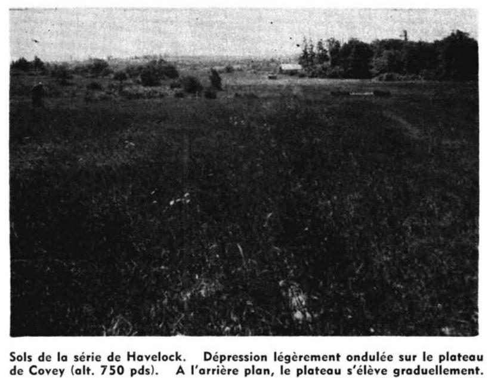

Identification & Caractéristiques Générales
La série de Havelock se développe sur un matériau parental constitué de limons gravelo-caillouteux d'origine glacio-lacustre ou de tills remaniés. Géomorphologiquement, ces sols occupent les banquettes et les replats topographiques qui assurent la transition entre les terrasses marines graveleuses et les versants du plateau de Covey, dans les basses-terres du Saint-Laurent. La topographie est caractérisée par des microreliefs légèrement ondulés à faiblement inclinés, limitant le ruissellement superficiel et l'égouttement naturel.
Sur le plan morphologique, le profil pédologique présente une texture limoneuse assortie d'une pierrosité variable, les fragments rocheux pouvant localement être abondants et imbriqués. En raison de sa position géomorphologique de bas de pente ou de replat et de la compacité relative de ses substrats, la série de Havelock est caractérisée par un mauvais drainage naturel et une perméabilité restreinte, entraînant la présence d'une nappe perchée temporaire en période de fonte nivale ou de précipitations abondantes. La réaction du sol est généralement acide dans les horizons supérieurs. Le couvert forestier naturel originel est dominé par l'orme d'Amérique, tandis que la végétation herbacée des secteurs les plus hydromorphes comprend divers carex et joncs.
Du point de vue agronomique, les sols de cette série présentent des contraintes majeures liées à l'excès d'eau temporaire et à la présence de cailloux, ce qui restreint leur aptitude optimale à la production de cultures fourragères ou de certaines grandes cultures tolérantes à l'humidité. La mise en valeur agricole de ces terres requiert obligatoirement l'installation d'un réseau de drainage souterrain pour abaisser la nappe phréatique temporaire et améliorer la portabilité des sols. De plus, un gestion rigoureuse du travail du sol et des interventions de chaulage correctif sont souvent nécessaires pour optimiser le pH et l'activité biologique de ces profils limoneux.
Classification Taxonomique & Environnement Pédologique
| Ordre Pédologique | Gleysolique |
|---|---|
| Grand Groupe (SCSS) | Gleysol humique |
| Sous-Groupe Taxonomique | Gleysol humique régosolique |
| Famille Pédologique | Loameuse-grossière, mixte sableux, neutre |
| Mode de Dépôt Parental | Glacio-lacustre |
| Classe de Drainage Naturel | Mal drainé |
| Régime Thermique & Humidité | Doux / Perhumide |
Description Morphologique du Profil Type
Séquence génétique des horizons pédologiques caractérisant le profil type représentatif de la série Havelock :
Profil représentatif — Comté de Huntingdon
✓ Source : Comté de Huntingdon — Page 200Couleur Munsell : Non précisée
Structure & Consistance : Grumeleuse
Description morphologique : Limon sablo-gravelo caillouteux, noir à brun foncé, humifère, friable, à structure grumeleuse. pH: 6.0 — 6.6.
Couleur Munsell : Non précisée
Structure & Consistance : Polyédrique à granulaire
Description morphologique : Limon sableux à sable limono-gravelo caillouteux, souvent à lits ou à nodules d'argile intercalés; jaune pâle à gris jaunâtre, rouillé, parfois avec traînées grisâtres. Modérément tassé à meuble, présence de cailloux variant en abondance et en grosseur. pH: 6.6 — 6.9.
Couleur Munsell : Non précisée
Structure & Consistance : Polyédrique à granulaire
Description morphologique : Limon sableux à sable limono-caillouteux, avec nodules argileux; jaune pâle à gris jaunâtre rouillé. Compact, pH: 6.5 — 7.5.
Couleur Munsell : Non précisée
Structure & Consistance : Polyédrique à granulaire
Description morphologique : Till sablo-limono caillouteux, très compact et très dur. Roc solide fréquemment observé à 4 pieds.
Profils Photographiques & Planches de Terrain
Documents iconographiques, figures pédologiques et coupes de terrain documentées dans les mémoires d'inventaire pour de la série Havelock :

Propriétés Physico-Chimiques & Analyses de Laboratoire
| Col 1 | Col 2 | Col 3 | Col 4 | Col 5 | Col 6 | Col 7 | Col 8 | Col 9 | Col 10 | Col 11 |
|---|---|---|---|---|---|---|---|---|---|---|
| Analyse physique : | % | % | % | % | % | % | % | % | % | % |
| Détritus | 4.5 | 20.5 | 8.5 | 17.5 | 23.0 | 33.0 | 25.0 | 54.5 | 19.5 | |
| Sable | 42.4 | 75.6 | 36.8 | 70.2 | 81.6 | 87.2 | 52.4 | 60.8 | 60.4 | |
| Limon | 40.8 | 13.0 | 26.4 | 21.0 | 12.2 | 7.4 | 34.8 | 24.4 | 24.8 | |
| Argile | 16.8 | 11.4 | 36.8 | 8.8 | 6.2 | 3.4 | 12.8 | 14.8 | 14.8 | |
| Humidité | 3.36 | 0.15 | 0.68 | 1.34 | 0.66 | 0.38 | 1.33 | 0.67 | 0.78 | |
| Perte au feu | 11.28 | 0.65 | 1.77 | 5.54 | 1.89 | 0.96 | 7.37 | 3.11 | 3.68 | |
| C organique | 5.25 | 1.19 | 0.21 | 2.72 | 0.77 | 0.32 | 3.20 | 1.04 | 1.28 | |
| SiO2 | 78.83 | 84.11 | 84.34 | 73.87 | 79.25 | 78.28 | 67.93 | 83.00 | 83.24 | |
| R2O3 | 18.35 | 13.72 | 19.58 | 11.3 | 10.2 | 10.5 | 13.2 | 12.7 | 12.6 | |
| CaO | 2.52 | 1.72 | 1.62 | 0.85 | 0.73 | 0.72 | 1.02 | 0.66 | 0.76 | |
| MgO | 1.12 | 0.69 | 1.25 | 0.39 | 0.40 | 0.45 | 0.51 | 0.56 | 0.58 | |
| K2O | 2.13 | 2.36 | 2.07 | 1.82 | 1.82 | 2.03 | 2.04 | 2.84 | 2.52 | |
| Mn3O4 | 0.108 | 0.049 | 0.083 | 0.07 | 0.042 | 0.063 | 0.087 | 0.049 | 0.056 | |
| P2O5 | 0.47 | 0.28 | 0.38 | 0.32 | 0.19 | 0.40 | 0.51 | 0.29 | 0.30 | |
| N | 0.46 | 0.04 | 0.06 | 0.26 | 0.08 | 0.05 | 0.30 | 0.11 | 0.15 | |
| pH | 6.9 | 7.6 | 7.7 | 6.6 | 6.9 | 7.0 | 5.9 | 6.4 | 6.3 | |
| Bases totales : | 34 | X4 | X13 | 11 | 7 | 5 | 16 | 10 | 10 | |
| Ca | 25.1 | X2.5 | X8.4 | 7.7 | 4.1 | 2.9 | 10.0 | 7.1 | 7.3 | |
| Mg | 5.8 | X1.3 | X3.7 | 1.6 | 1.2 | 0.9 | 2.2 | 1.9 | 1.7 | |
| Mn | 1.53 | 0.22 | 0.25 | 0.47 | 0.91 | 0.44 | 1.06 | 0.47 | 0.62 | |
| K | 0.87 | 0.05 | 0.41 | 0.46 | 0.15 | 0.25 | 0.25 | 0.38 | 0.28 | |
| Hydrogène | 2.9 | 0.5 | 0.5 | 3.4 | 1.7 | 1.1 | 5.9 | 3.4 | 3.4 | |
| CO2(1) | 5.6 | 5.2 |
Particularités Régionales, Phases & Variantes Pédologiques
Déclinaisons régionales, faciès texturaux, phases d'érosion ou de pierrosité et variantes cartographiées par étude pour de la série Havelock :
| Étude Régionale | Symbole | Appellation / Phase / Variante | Différenciation avec la série type (Analyse pédologique) |
|---|---|---|---|
| Comté de Huntingdon | Hv |
Havelock loam argileux à sable graveleux caillouteux | Modalité modale de référence (type de base de la série). |
Distribution Pédo-Paysagère & Représentativité Cartographique (Couverture PPS 2026)
- Covey loam sableux caillouteux (CVY) — co-occurrente dans 2 polygone(s)
- Botreaux sable limoneux à loam sableux (BUX) — co-occurrente dans 1 polygone(s)
Aptitudes Agronomiques, Hydropédologie & Conservation des Sols
Indicateurs Hydropédologiques & Vulnérabilité à l'Érosion (BDHP 2026)
Interprétation BDHP : Sols à double groupe : C à l'état drainé artificiellement, D à l'état naturel non drainé.
Classement selon l'Inventaire des Terres du Canada (ITC / CLI) : Classe 2w.
- Potentiel agricole : Terroir adapté aux cultures régionales selon la texture dominante et la régie de drainage.
- Contraintes majeures : Mal drainé. Risque d'engorgement temporaire ou d'excès d'eau printanier.
- Gestion & Aménagement : Drainage souterrain ou superficiel préconisé sur les terres planes. Chaulage et apport organique régulier selon les bilans agronomiques.
- Cultures adaptées : Grandes cultures (maïs, soya, céréales), prairies fourragères et cultures maraîchères selon le contexte géomorphologique.